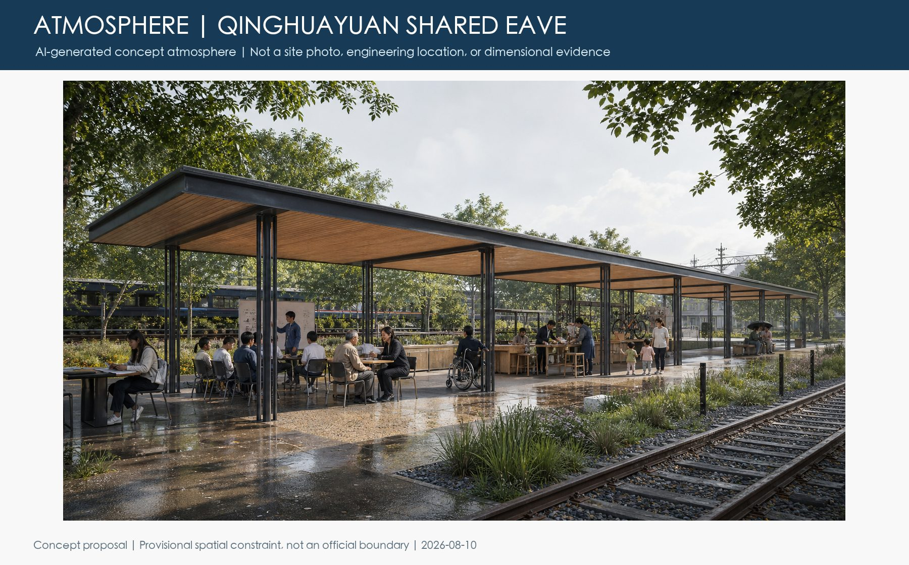
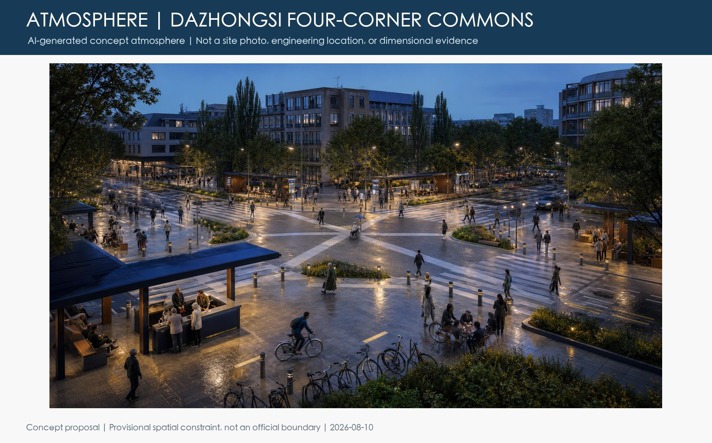

Overview map | Key areas | Land use | Mobility | Blue-green public space | Renewal projects | AI scenarios | Core metrics | Brief coverage
Overall Concept and Local DNA

Three Levels and Structure

Three Areas and Landmarks

Everyday Service, Mobility, Blue-Green

Project-Wide Differentiation Evidence

Flagship 1: Qinghuayuan Shared Eave

Shared Eave: Human-Scale Concept

Flagship 2: Dazhongsi Four-Corner Commons

Four-Corner Commons: Human-Scale Concept

Check status
The full deterministic, spatial, visual, and professional checks now run successfully. Provisional-boundary warnings remain and official geometry will trigger package-wide recalculation.
Sources and assumptions
The call, Haidian plans, urban-renewal guide, public project records, five international cases, and the 309-item public proposal catalog are recorded in sources.json.
Official boundaries, controls, heritage, existing conditions, mobility, utilities, and rights remain pending; see assumptions.json.